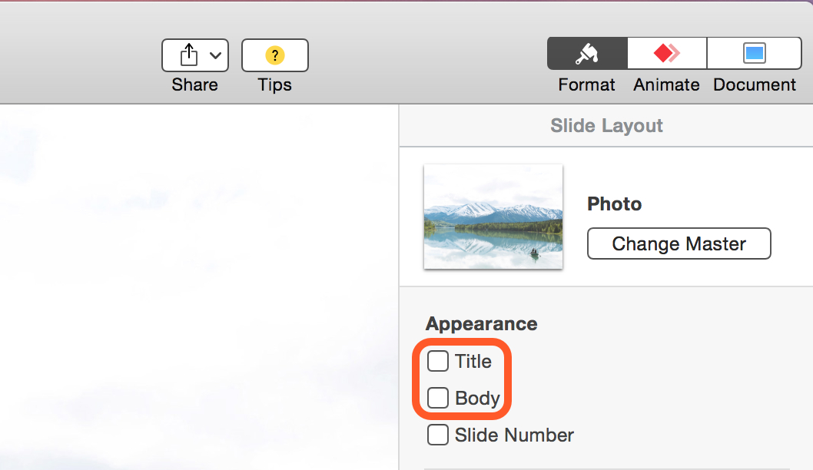
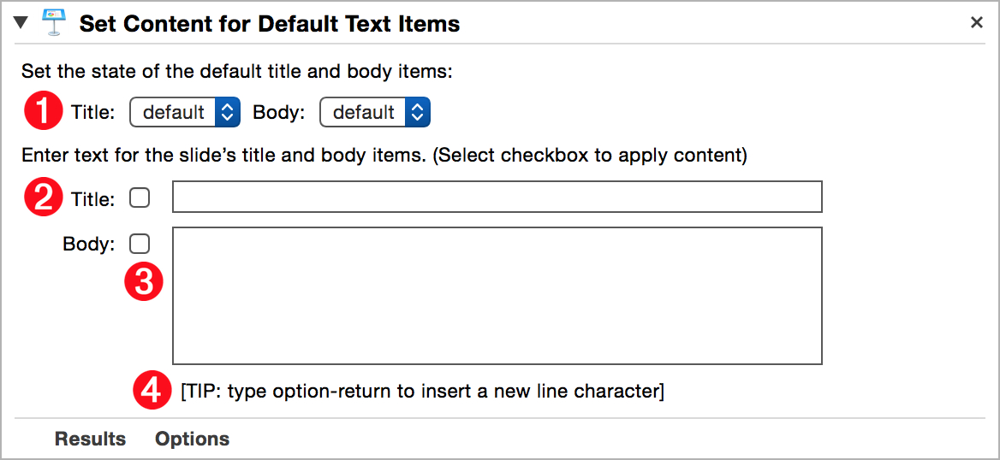
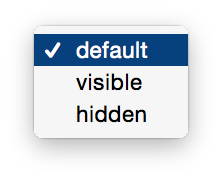

Every Keynote slide, regardless of which master slide it is based upon, can display a default title or body text item. Some master slides, such as full slide photo, disable these text items by default (⬇ see below )

(⬆ see above ) The controls for the default text items of a slide are available in the Slide Layout tab of the Format panel in the Keynote document window.
In some master slides the default body item is used to display a bulleted list of text entries, while in others it is used to display a single line of text.
Using the “Set Contents for Default Text Items” action, you can enable|disable either or both of a slide’s default text items, and set their text content.
The Action Information
| Input: | This action accepts AppleScript references to the slides to be processed. NOTE:
|
| Output: | An AppleScript reference to the processed slide |
| Parameters: | User-settable parameters include:
|
| Related: | Other actions that often precede this action:
|
The Action Interface
This action has controls for determining the status (visibility) of default text objects, as well as for setting their text content:

1 Status Control menus • Two menus for controlling the visibility of the title and body items. Each menu offers options for setting the visibility of the object to:
Follow the default behavior determined by the master slide
Make the text object visible
Hide the text object, regardless of content

2 Default Title Item • Select the checkbox to make the default title item visible and showing the content provided in the corresponding text input field
3 Default Body Item • Select the checkbox to make the default body item visible and showing the content provided in the corresponding text input field
4 TIP • When the cursor is within the text entry field, typing the Option-Return keys will enter a new line character. Also, if the default body item is designed to display a bulleted list, each paragraph entered into the text input field will be displayed as a bullted entry.
NOTE: Both text input fields in this action support the use of Automator workflow variables to dynamically generate their text values when the workflow containing the action is run. (see the example below and the dynamic prompt example)
Prompt for Bullet Points
Here a script for entering into an AppleScript variable that is placed in the body text input field in any action that replaces the default body content of a slide.
The script will prompt the user to enter the text of a bullet, and then offer three options:
- Click the “Add” button to store the entered text and bring up the dialog again, prompting for another bullet content
- Click the “Add & Done” button to add the entered text to the stored text and then close the dialog and replace the content of the slide body text input with the entered bullet points
- Click the Cancel button to stop